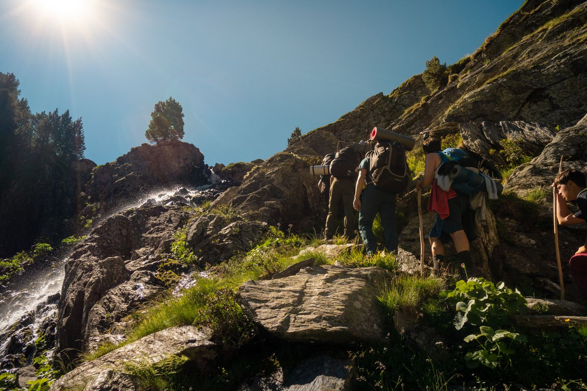
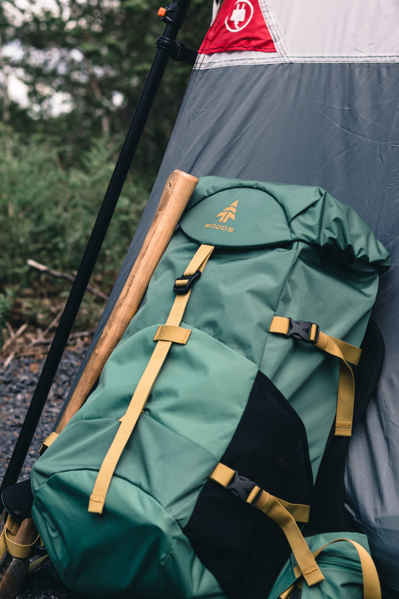

Neem de
omweg.
De mooiste route is zelden een rechte lijn.
Ontdek de Buiten-edit
Verder kijken. Langzamer gaan.
Voorbij de laatste huizen wordt het stiller. Een pad tussen de bomen, een stukje omhoog en tijd om even om je heen te kijken.

Kijk vooruit
Kies een route die past bij het weer en je ervaring.